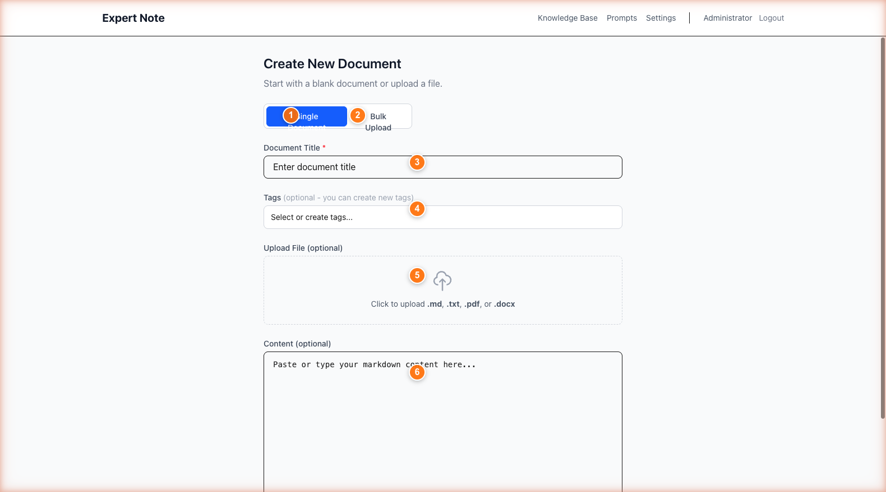
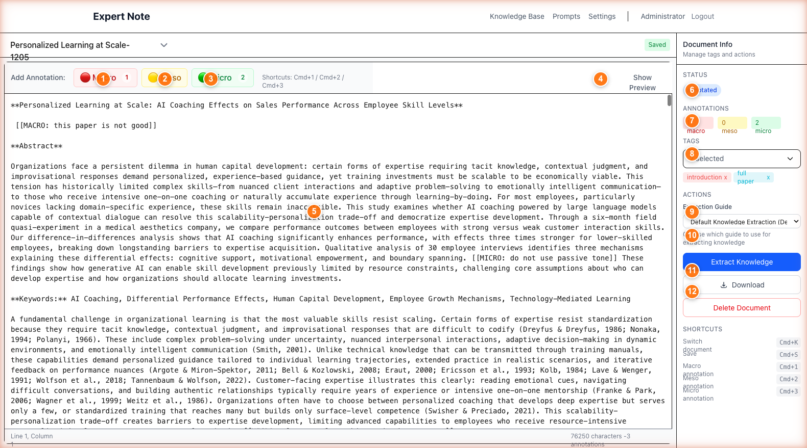
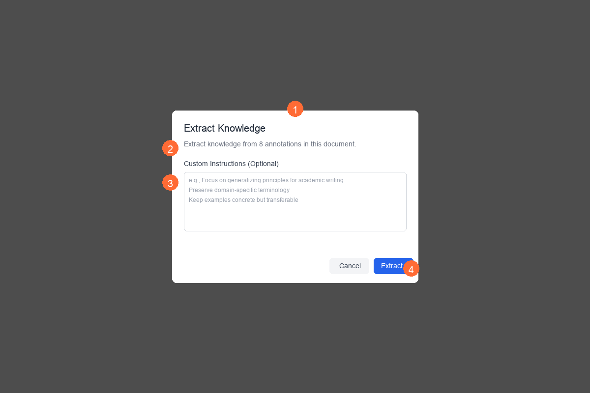
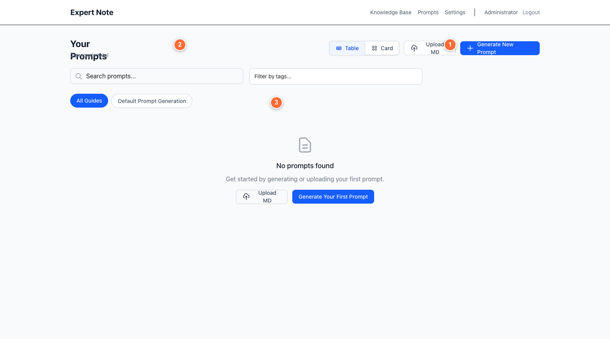

Capture human expert knowledge and convert it into structured, reusable AI-ready assets
Quick Start Guide v1.0 | January 2026
Upload documents in multiple formats - PDF and DOCX are automatically converted to markdown
Mark important content using a structured 3-level system that creates hierarchy AI can understand
What to mark: Big ideas, themes, frameworks, research questions
What to mark: Supporting evidence, methodologies, secondary themes
What to mark: Specific facts, quotes, data points, citations

Annotation buttons (Cmd+1/2/3) and visual markup preserve knowledge structure
AI analyzes your annotations and creates searchable, reusable knowledge entries
Select a template matching your domain: Academic Research, Business Strategy, Technical Documentation, or Default
Guide the AI to focus on specific aspects or adjust formality level
AI generates: Background/Context, Key Concepts (organized by level), Relationships, Actionable Insights

Choose an extraction guide matching your domain and optionally add custom instructions
Turn knowledge into prompts that teach AI to reason like your domain experts

Generate prompts that teach AI to reason like your domain experts - created from real knowledge, not generic templates
Get started with Expert Note in just 15 minutes
Choose a document you know well - research paper, report, or documentation
Mix of MACRO (main ideas), MESO (supporting points), MICRO (specific details)
Use default extraction guide, click Extract, review the structured result
See how AI structured your annotations - notice the organization and insights
Convert scattered expert knowledge into organized, AI-ready assets that preserve human insight
Get Started Now